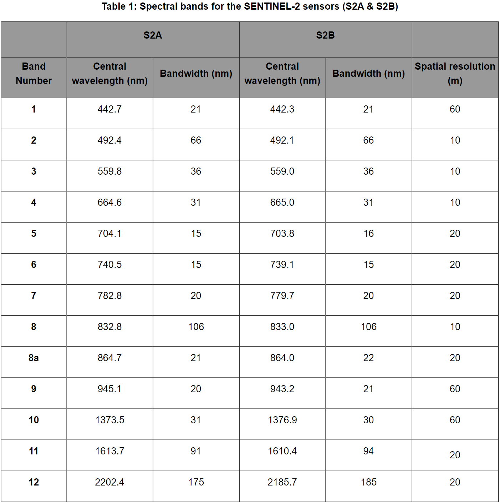
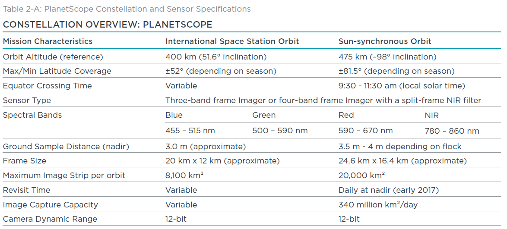
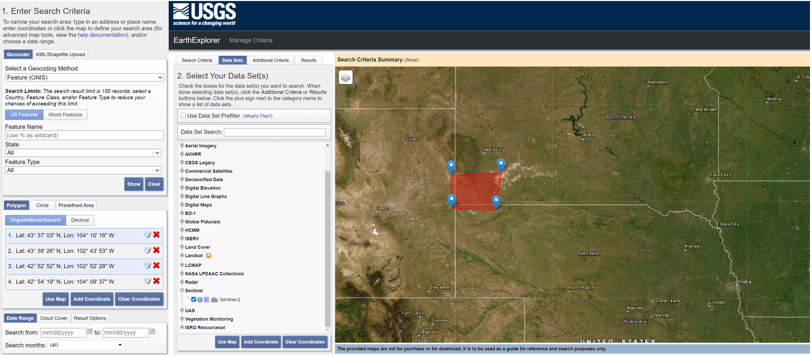
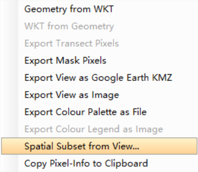
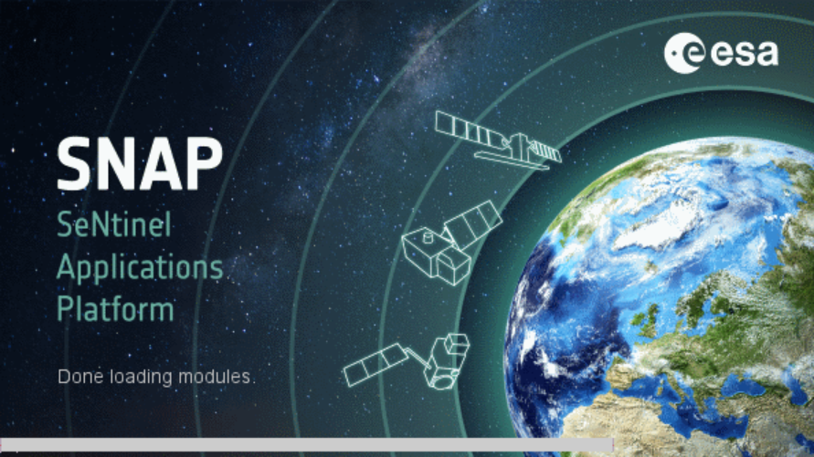
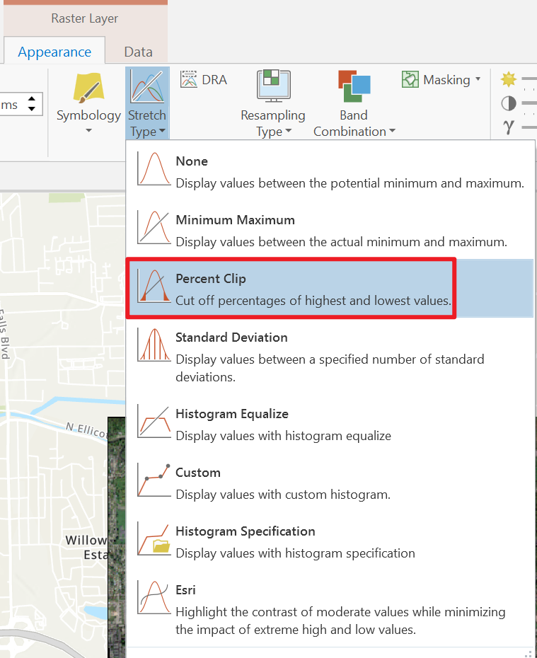
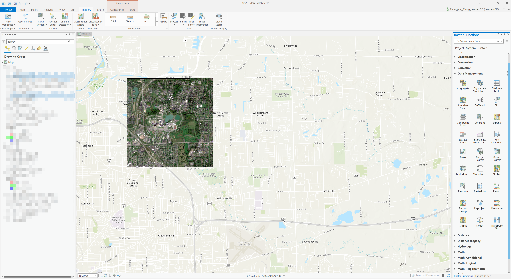
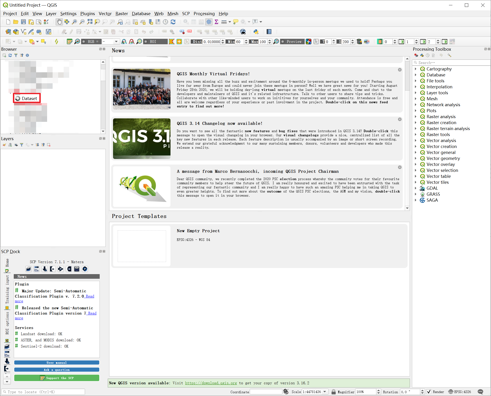

Analyzing Geography Data (Beginners' Tutorial)
数据来源
卫星类型
-
Sentinel-2：提供混合分辨率的13 Bands MSI。分辨率有，，，bands中心波长从442.3nm到2185.7nm。
 -
Planet：这个数据源提供的4 bands MSI image。分别是R、G、B、NIR。
- 这个数据源似乎只对美国国内的院校机构开放，不过不是很确定，需要的可以试试。

-
RapidEyes
Sentinel-2 Data Source
-
USGS Earth Explorer: Link. It support downloading data within five years. And it not only support sentinel-2 data, but also contains many other satellite datasource.

-
Copernicus Open Access Hub: Link. It supports only one year’s old data. You can request the older data, but not guarante the fetch time.

-
Amazon AWS Sentinel-2 Service: Link

Planet Data Source
- 官网：Link
Specification
- Sentinel-2 MultiSpectral Instrument (MSI) Overview
- Sentinel-2 Specification Doc
- Planet Specification
软件与Python包简介
- GDAL –> Fundamental package for processing vector and raster data formats (many modules below depend on this). Used for raster processing.
- Rasterio –> Clean and fast and geospatial raster I/O for Python. Guidebook.
- Geopandas –> Working with geospatial data in Python made easier, combines the capabilities of pandas and shapely.
- Shapely –> Python package for manipulation and analysis of planar geometric objects (based on widely deployed GEOS).
- Fiona –> Reading and writing spatial data (alternative for geopandas).
- Pyproj –> Performs cartographic transformations and geodetic computations (based on PROJ.4).
- Pysal –> Library of spatial analysis functions written in Python.
- Geopy –> Geocoding library: coordinates to address <-> address to coordinates.
- GeoViews –> Interactive Maps for the web.
- Networkx –> Network analysis and routing in Python (e.g. Dijkstra and A* -algorithms), see this post.
- Cartopy –> Make drawing maps for data analysis and visualisation as easy as possible.
- Scipy.spatial –> Spatial algorithms and data structures.
- Rtree –> Spatial indexing for Python for quick spatial lookups.
- RSGISLib –> Remote Sensing and GIS Software Library for Python.
- python-geojson-> Deal with geojson format files.
Sentinel-2 大气校正
Sentinel-2一般有两种standard，一个是A级别，一个是C级别。C级别的数据是你可以从任意网站上下载到的数据，它没有经过大气校正，是粗数据，每个区块的反射率可能有不同，不适合直接用作深度学习数据。
经过Sen2Cor软件校正后可以得到A级别的数据。
Sen2Cor是欧空局发布的一个软件，它即可以作为SNAP的插件安装，也可以作为独立命令行软件使用。推荐后者，更为快速、稳定，尤其适用于大量数据时，可以用脚本批处理。官网链接
查询坐标映射
- 地球是圆的。
- 卫星上拍的一张矩形照片所对应的区域并非是矩形的。
- 使用卫星图片时要先将其映射到二维展开的坐标系中。
- 整个地球被分为了许多预先订好的区域。
- 每个区域有一个编号。
- 编号可以在EPSG网站查询。
SNAP
-
欧空局自己用作处理Sentinel-2的软件。Link
-
只用来处理Sentinel-2，尤其是预处理，包括校正，reprojection，粗crop，统一各个bands分辨率等等，非常好用。因为是亲儿子，所以甚至可以直接读取Sentinel-2每个文件的压缩包，总之十分便利。
-
比较古老，interface有年代感，功能也相较于其他软件比较局限。
-
推荐用作第一步预处理。
-
使用流程：
读取->剪裁->correction->resize->reprojection->导出。 -
大部分需要用到的功能都在
Raster->Geometric中 -
经过尝试、搜索、确认，SNAP并不提供便利的选定区域截图，或是依据shapefile剪裁，所以目前最佳的方法是，先通过zoom地图和改变窗口大小确保需要的部分大致在view的可视范围内，然后右键，选择
Spatial Subset from View，然后可视区域即可被剪裁。注意，这只是粗剪裁，所以尽量多包括一点，也不要少任何一部分。剪裁后的内容可以后续在ArcGIS Pro中进一步处理。 -
展示图：


ArcGIS Pro
-
我能找到的最强大的可用于卫星图像处理的软件。
-
专业，美观，支持format多，有着强大的raster functions。
-
版权软件，下载之前先确认自己学校或公司是否提供License。
-
有时导出raster会出现随机bug，导致：导出可能是纯黑的图片，导出部分没有按照期望剪裁等。很恶心，但似乎也没有更好的选择。
-
解决导出问题：
- 关闭导出窗口，重新操作，多试几次。可以解决绝大部分问题。
- 和剪裁、mask等有关的问题可以先使用raster function进行这些操作，再直接导出前面操作的结果layer。
-
关于剪裁后的卫星图片和原始图片有着明显亮度对比度区别的问题：
-
首先，这不是一个bug，而是一个feature。。。实际上的卫星图都很暗沉的，所以软件原生提供一个“显示方法”的函数，调整图片曲线，使得显示的图片比较亮，容易看清楚细节。然而，剪裁后的图片有着不一样的统计值，所以在有些显示函数下，显示的结果和剪裁前结果不同。
 -
但是不用担心，因为导出时候并不会考虑这个显示函数。即：剪裁前后的导出图像数值是相同的。
-
-
下面是两张展示图：

QGIS
-
开源软件，支持很多插件，比如直接下载Sentinel-2数据，Sen2Cor等。Link
-
支持很多format的数据。
-
问题是，不稳定，效率低，容易崩溃（软件&心态），甚至左侧Explorer遇到大文件夹都要经常转很久才能进去，或是干脆就直接转崩了。我怀疑他们要分析每个文件夹所有文件之后再显示列表。。。总之，慎重。

Pythonic Method
虽然前面介绍了几个软件，但是说实话，处理一两个可以，批量处理几十几百甚至几十万就有点力不从心了。所以最后还是狠下心研究了一遍Python处理这些数据的方法，写出了一批适合我项目用的函数。不一定适合所有人，但可以作为参考：
1 | import numpy as np |